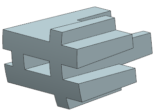
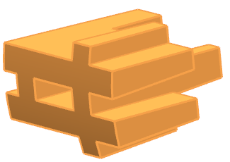
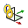
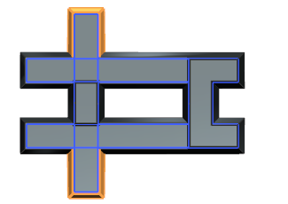
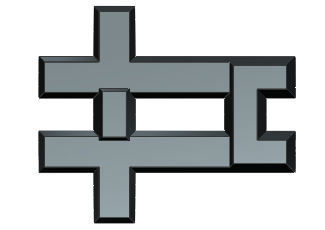
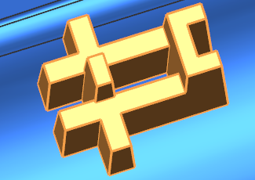

Modify a Linked Part Module
In your role as a secondary designer, you need to modify the mounting features for a heat sink. You can open the Linked Part Module file without having the main design part file open.
-
Open heat_sink_linked_file.
-
Fit the graphics screen.

-
In the Part Navigator, right-click Linked Part Module “Heat Sink” and choose Expand All.

-
Examine the Part Navigator. Notice that:
-
The Inputs collector has two WAVE-linked features:
 Linked Datum CSYS (1)
 Linked Face (2)
Linked Face (2)These are the child features that are WAVE linked to their parent features in Inputs collector of the main part file.
-
The Work collector has a sketch and two extrude features. This is the collector that moved from the main part file.
-
The Outputs collector has one extracted face. This is the parent feature of the child linked feature that was created in the Outputs collector in main part file.
-
-
In the Work collector, double-click Sketch (4) “SKETCH_001”.
The Linked Part Module is activated and the sketch is open for edit.
Note
In the following graphic, the linked face is hidden for clarity.

-
Edit the value of the p412 expression from 5.8 to 7.6.

-
Right-click in the background of the graphics window and choose Finish Sketch
 .
.
NX updates the extrude features. The faces highlighted are now longer.

-
In the Part Navigator, right-click Linked Part Module “Heat Sink” and choose Deactivate Part Module.
The objects in the Inputs and Work collectors are hidden and the Extracted Face in the Outputs collector is displayed.

-
On the Standard toolbar click, Save
 .
.
-
Right-click Linked Part Module “Heat Sink” and choose Make Main Work.
Because you are playing the roles of both the principal designer and the secondary designer, you chose Make Main Work. In a true concurrent design environment the principal designer would use the Update Output References command to update the main part file while the secondary designers continued to make changes to their assigned areas of the part in their Linked Part Module files.
